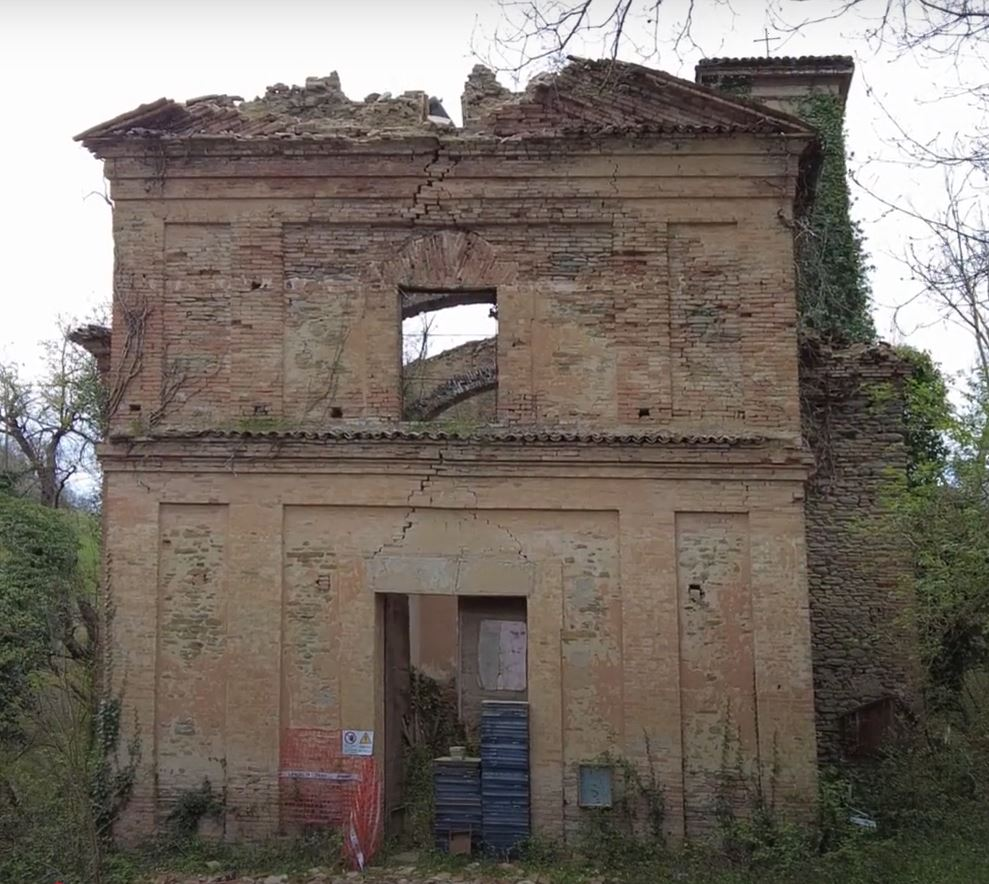
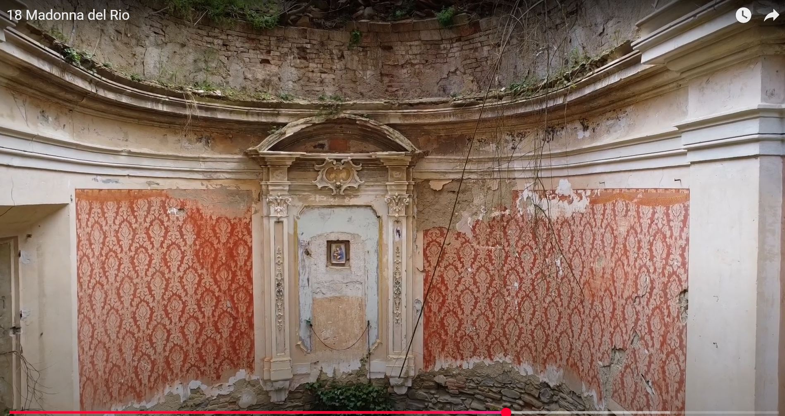
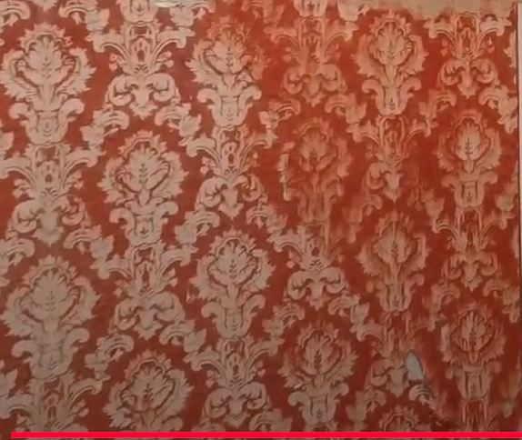

La storia
Un edificio sacro legato alla devozione popolare, oggi segnato dal tempo e dalla vegetazione.
Santuario nel bosco
Un santuario nascosto nel bosco. Una memoria da riportare alla luce.
Custodire una memoria fragile
Pietra, intonaco e damasco consumato raccontano un luogo che ha attraversato generazioni. La demo immagina un percorso semplice per far conoscere il progetto e raccogliere sostegno.

Un edificio sacro legato alla devozione popolare, oggi segnato dal tempo e dalla vegetazione.

La messa in sicurezza e il recupero possono restituire dignità alle murature e agli apparati decorativi.

Ogni contributo diventa un segno condiviso: una luce accesa per proteggere il santuario.
Una luce alla volta
Ogni donazione accende una luce nel santuario e aiuta a restituire vita a un luogo dimenticato.
Apri la demo donazioni